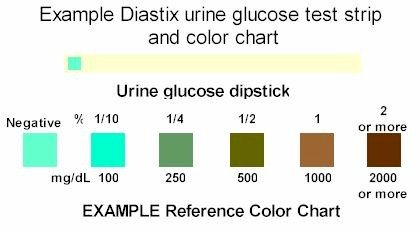

Patient A: Colonel Mustard:
Possible Diagnosis: Jaundice, Liver Problems, Kidney Disease
Patient B: Mrs. Peacock:
Possible Diagnosis: Bladder infection, Kidney Disease
Patient C: Professor Plum
Possible Diagnosis: Kidney Damage, Diabetes
|
Test: |
Urine #1 |
Urine #2 |
Urine #3 |
|
pH |
8.0 |
6.5 |
7.0 |
|
Protein (Biuret's Solution; negative = blue; positive = violet) |
Positive |
Normal |
Normal |
|
Specific gravity (density with no units) Distilled water S.G. = 1.0 |
1.035 |
1.005 |
1.025 |
|
Glucose (Test strip; 0 mg/dL = normal) |
0 |
Green/Brown (see chart below) |
0 |
|
Presence of Red Blood Cells (RBC) |
Yes |
0 |
0 |
|
Appearance: |
Cloudy, Dark Yellow/Red, crystals present |
Clear, very slight yellow color |
Dark, foamy, positive for bilirubin |

Reference: http://www.petdiabetes.com/pdorg/urine.html